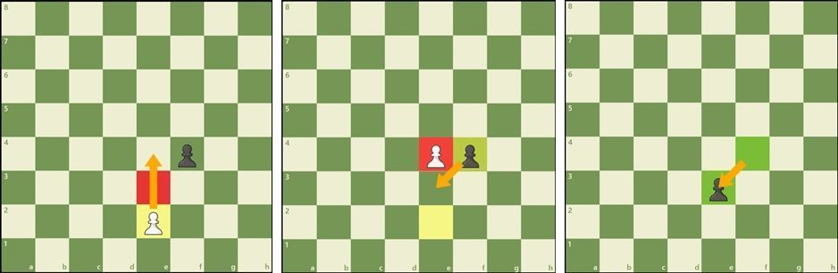

Ajedrez fue inventado por el joven inglés Franciscano Auguste Queen, en 1588. La historia del ajedrez comienza cuando el rey de England, Charles I, invitó a su hermana, Isabella, a jugar con él. Después de que Isabella se enteró de que Charles estaba enfermo, el rey invitó a su hermana a jugar ajedrez para que Charles pudiera recuperar su salud. Charles y Isabella se enfrentaron en el barón de Aquitaine, en 1592.
Reglas de juego
Descubre las reglas especiales del ajedrez
Hay unas reglas especiales de ajedrez que pueden no parecer lógicas al principio. Fueron creadas para hacer el juego más divertido e interesante.
¿Cómo coronar un peón en ajedrez?
Los peones tienen otra habilidad especial: si llegan al otro extremo del tablero pueden convertirse en cualquier otra pieza, excepto en un rey (a esta jugada se le llama coronación o promoción).

Un error común es considerar que los peones sólo pueden ser canjeados por una pieza que haya sido previamente capturada por el adversario. Pero eso no es cierto. Generalmente, un peón que corona se convierte en una dama. Solo los peones pueden promocionar.
Cómo capturar al paso ("en passant")La última regla sobre los peones se llama captura "en passant", que en francés significa "al paso". Si un peón avanza dos casillas en su primer movimiento, y al hacerlo se sitúa al lado de un peón rival, este peón enemigo tiene la opción de capturar al primero ocupando la casilla que aquel hubiera ocupado si solo hubiera avanzado una casilla.
El peón blanco pasa por una casilla controlada por las negras y permite la captura al paso.
Esta jugada especial debe hacerse inmediatamente después del movimiento del primer peón, de lo contrario la opción de capturar ya no estará disponible. Observa el siguiente ejemplo para entender mejor esta extraña, pero importante regla.
Cómo se hace un enroqueHay otra regla especial denominada enroque. Esta jugada te permite hacer dos cosas importantes en un solo movimiento: situar al rey en una posición más segura y sacar a la torre de su esquina para ponerla en juego. En un solo turno el jugador puede mover al rey dos casillas hacia un lado y, al mismo tiempo, la torre situada en la esquina de ese lado, se coloca junto al rey en la casilla ubicada en el lado opuesto. (Ver el siguiente ejemplo). Sin embargo, para poder hacer un enroque se deben cumplir las siguientes condiciones:
- El rey debe estar en su posición inicial en el tablero.
- Debe haber una torre en su esquina opuesta.
- No debe haber ningún otro peón en la diagonal que pueda impedir la torre a moverse.
- No debe haber ningún otro peón en la misma fila o columna que pueda impedir la torre a moverse.
- El rey y la torre no deben estar en la misma casilla.
- No debe haber ningún otro rey en el camino que pueda impedir la torre a moverse.
Si el enroque se hace con la torre más cercana al rey se llama enroque corto o enroque flanco de rey. Cuando el enroque se hace hacia el otro lado se denomina enroque largo o enroque flanco de dama. Independientemente del tipo de enroque, el rey solo se mueve dos casillas en esta jugada.
 Averigua quién hace la primera jugada en ajedrez
Averigua quién hace la primera jugada en ajedrez
El jugador con las piezas blancas siempre es el primero en mover. Por lo tanto, antes de la partida generalmente se echa a suertes qué jugador controlará las blancas, por ejemplo, lanzando una moneda al aire o adivinando el color del peón oculto en la mano de uno de los jugadores. Las blancas realizan la primera jugada, seguida del primer movimiento de las negras, después mueven blancas de nuevo, y así sucesiva y alternativamente hasta el final de la partida. El jugador que mueve primero (blancas) tiene una pequeña ventaja porque puede llevar la iniciativa y atacar inmediatamente.
Revisa las normas de cómo ganar una partida de ajedrezHay varias formas de terminar una partida de ajedrez: con jaque mate, en tablas (empate), rendirse, perder por tiempo... Cómo dar jaque mate El objetivo del juego es dar jaque mate al rey del adversario. Esto ocurre cuando el rey está en jaque y no puede salir de esa situación. Solo hay tres formas por las que un rey puede escapar de un jaque:
- moverse a una casilla segura (¡aunque no puede enrocarse!)
- bloquear el jaque interponiendo otra pieza de su propio bando
- capturar la pieza que amenaza al rey.
Si un rey no puede escapar del jaque, la partida ha terminado. Generalmente el rey no es capturado o retirado del tablero, simplemente la partida se declara finalizada.
 Este ejemplo, en el cual las negras dan mate en 2 jugadas, se conoce como "Mate del Loco".
Cómo empatar una partida
Este ejemplo, en el cual las negras dan mate en 2 jugadas, se conoce como "Mate del Loco".
Cómo empatar una partida
A veces, las partidas de ajedrez terminan sin un ganador, pero en empate (denominado tablas). Hay 5 razones por las que una partida puede terminar en tablas:
- La posición llega a un punto muerto en el que es el turno de un jugador, pero su rey no está en jaque y sin embargo, no puede hacer ningún movimiento reglamentario. Esto se conoce comúnmente como "ahogado".
 Con la jugada Dc7, las blancas crean el rey ahogado y la partida termina en tablas.
Con la jugada Dc7, las blancas crean el rey ahogado y la partida termina en tablas.
- Los jugadores pueden acordar Tablas y dejar de jugar
- No hay suficientes piezas en el tablero para forzar un jaque mate (ejemplo: un Rey y un Alfil contra otro Rey)
- Un jugador declara Tablas si la misma posición se repite tres veces (aunque no necesariamente tres veces seguidas)
- Se han efectuado 50 movimientos y ninguno de los jugadores ha movido un peón ni capturado una pieza
Hay cuatro cosas sencillas que todo jugador de ajedrez debe saber:
Protege a tu reyDesplaza a tu rey hacia la esquina del tablero, porque suele ser un lugar más seguro. No tardes en hacer el enroque. Por lo general, deberías enrocarte tan rápido como sea posible. Recuerda que no importa lo cerca que estés de dar jaque mate a tu rival si antes van a dar jaque mate a tu propio rey.
No regales piezas¡No pierdas piezas por falta de atención! Cada pieza es valiosa en sí misma y no podrás ganar una partida si no tienes piezas para dar jaque mate.
 Controla el centro del tablero
Controla el centro del tablero
Tienes que intentar controlar el centro del tablero con tus piezas y peones. Si controlas el centro, tendrás más espacio para mover tus piezas y tu adversario tendrá más difícil encontrar buenas posiciones para las suyas. En el ejemplo anterior, las blancas hacen buenos movimientos para controlar el centro mientras que las negras realizan malas jugadas.
Utiliza todas tus piezas de ajedrez¡En el ejemplo anterior las blancas tienen todas sus piezas en la partida! Tus piezas no hacen nada si permanecen ancladas en la primera fila. Trata de desplegar todas tus piezas para que puedas utilizarlas cuando vayas a atacar al rey enemigo. Emplear solo una o dos piezas para atacar no será suficiente para derrotar a un adversario digno.